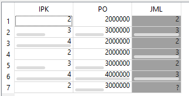
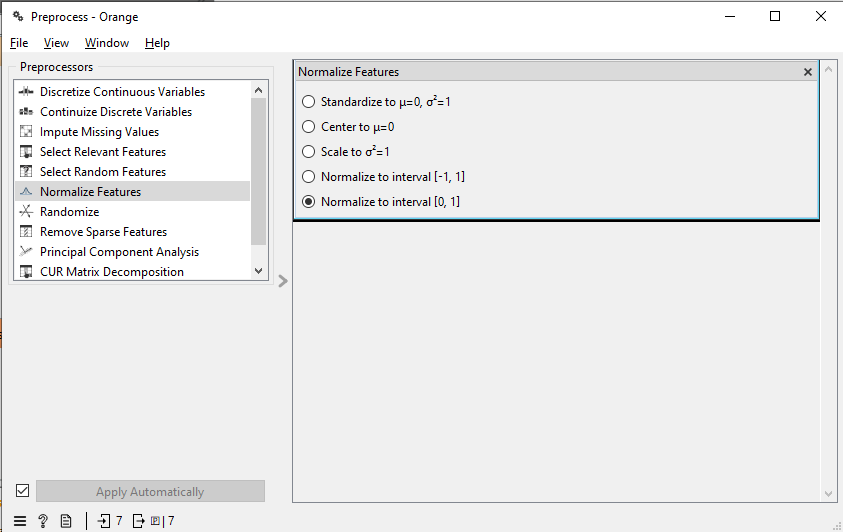
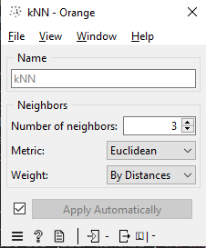
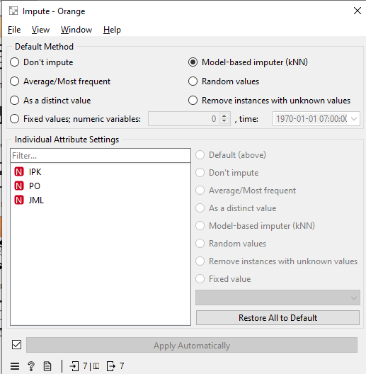
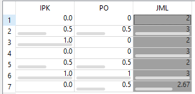

Prediksi Missing Value dengan WKNN#
Algoritma WKNN (Weighted K-Nearest Neighbors) adalah pengembangan dari kNN di mana setiap tetangga diberikan “bobot” (weight) berdasarkan kedekatan jaraknya. Tetangga yang lokasinya lebih dekat akan memiliki pengaruh lebih besar dalam menentukan hasil akhir prediksi dibandingkan tetangga yang jauh.
1. Dataset#
Berikut adalah dataset yang digunakan (diambil dari file tugasWKNN.csv). Terdapat missing value pada data ke-7 (T7) di kolom JML.
Data |
IPK |
PO |
JML |
|---|---|---|---|
T1 |
2 |
2.000.000 |
2.0 |
T2 |
3 |
3.000.000 |
3.0 |
T3 |
4 |
2.000.000 |
2.0 |
T4 |
2 |
2.000.000 |
3.0 |
T5 |
3 |
3.000.000 |
2.0 |
T6 |
4 |
4.000.000 |
3.0 |
T7 |
2 |
3.000.000 |
? |
2. Perhitungan Manual WKNN#
Mengingat rentang kolom PO sangat besar (jutaan) dibandingkan IPK (satuan), maka kita wajib menormalisasi data terlebih dahulu agar jarak komputasinya seimbang dan tidak didominasi oleh kolom PO.
Langkah A: Normalisasi (Min-Max)#
Kita akan mengubah skala nilai menggunakan rumus Min-Max Normalization:
Untuk IPK: \(\min = 2, \max = 4\)
Untuk PO: \(\min = 2.000.000, \max = 4.000.000\)
Hasil normalisasi untuk data target T7:
\(IPK_{T7} = \frac{2 - 2}{4 - 2} = \frac{0}{2} = 0\)
\(PO_{T7} = \frac{3.000.000 - 2.000.000}{4.000.000 - 2.000.000} = \frac{1.000.000}{2.000.000} = 0.5\)
Tabel data setelah seluruhnya dinormalisasi menjadi seperti ini:
Data |
IPK (Norm) |
PO (Norm) |
JML |
|---|---|---|---|
T1 |
0 |
0 |
2.0 |
T2 |
0.5 |
0.5 |
3.0 |
T3 |
1 |
0 |
2.0 |
T4 |
0 |
0 |
3.0 |
T5 |
0.5 |
0.5 |
2.0 |
T6 |
1 |
1 |
3.0 |
T7 |
0 |
0.5 |
? |
Langkah B: Menghitung Jarak Euclidean#
Kita hitung jarak T7 (0, 0.5) terhadap data lainnya menggunakan rumus Euclidean:
Jarak ke T1: \(\sqrt{(0-0)^2 + (0.5-0)^2} = \sqrt{0.25} = 0.5\)
Jarak ke T2: \(\sqrt{(0-0.5)^2 + (0.5-0.5)^2} = \sqrt{0.25} = 0.5\)
Jarak ke T3: \(\sqrt{(0-1)^2 + (0.5-0)^2} = \sqrt{1.25} \approx 1.118\)
Jarak ke T4: \(\sqrt{(0-0)^2 + (0.5-0)^2} = \sqrt{0.25} = 0.5\)
Jarak ke T5: \(\sqrt{(0-0.5)^2 + (0.5-0.5)^2} = \sqrt{0.25} = 0.5\)
Jarak ke T6: \(\sqrt{(0-1)^2 + (0.5-1)^2} = \sqrt{1.25} \approx 1.118\)
Dengan menggunakan parameter \(k = 3\), tetangga terdekat dari T7 adalah T1, T2, dan T4 (Karena jarak T1, T2, T4, dan T5 seri di angka 0.5, urutan prioritas diambil dari baris paling atas).
Langkah C: Menghitung Bobot & Nilai Prediksi#
Bobot (\(w\)) dihitung menggunakan rumus kebalikan dari jarak, yaitu \(w_i = \frac{1}{d_i}\):
\(w_{T1} = \frac{1}{0.5} = 2\)
\(w_{T2} = \frac{1}{0.5} = 2\)
\(w_{T4} = \frac{1}{0.5} = 2\)
Prediksi (\(\hat{Y}\)) dihitung dari perkalian bobot dan nilai target dibagi total bobot: $\(\hat{Y} = \frac{\sum_{i=1}^{k} w_i \cdot Y_i}{\sum_{i=1}^{k} w_i}\)$
Hasil: Nilai missing value JML untuk T7 diprediksi adalah 2.67.
3. Implementasi dengan Python (Sklearn)#
Berikut adalah script Python untuk memproses dataset, melakukan normalisasi Min-Max, dan menerapkan algoritma WKNN:
import pandas as pd
import numpy as np
from sklearn.preprocessing import MinMaxScaler
from sklearn.neighbors import KNeighborsRegressor
# 1. Membaca file dataset
# Pastikan file tugasWKNN.csv berada di satu folder dengan file eksekusi ini
df = pd.read_csv('tugasWKNN.csv', sep=';')
# Memisahkan data training (ada nilai JML) dan data testing (missing JML)
df_train = df.dropna(subset=['JML'])
df_missing = df[df['JML'].isnull()]
# Menentukan kolom fitur
features = ['IPK', 'PO']
# 2. PROSES NORMALISASI (Min-Max Scaler)
scaler = MinMaxScaler()
# Fit & transform pada data latih, lalu transform pada data missing
X_train_norm = scaler.fit_transform(df_train[features])
X_missing_norm = scaler.transform(df_missing[features])
y_train = df_train['JML'].values
# 3. PEMODELAN WKNN
# Menggunakan k=3 dan weights='distance' untuk menerapkan algoritma WKNN
wknn = KNeighborsRegressor(n_neighbors=3, weights='distance')
wknn.fit(X_train_norm, y_train)
# 4. PREDIKSI
y_pred = wknn.predict(X_missing_norm)
print(f"Hasil prediksi nilai JML untuk T7: {y_pred[0]:.2f}")
Hasil prediksi nilai JML untuk T7: 2.67
Implementasi WKNN di Orange Data Mining#
Di aplikasi Orange Data Mining, Anda mungkin mendapati hasil akhir prediksi bernilai 2.5 jika menghubungkan dataset mentah langsung ke widget algoritma. Mengapa demikian?
Hal ini terjadi karena data belum dinormalisasi. Tanpa normalisasi, kolom PO yang bernilai jutaan akan mendominasi perhitungan jarak Euclidean, sehingga algoritma pada dasarnya mengabaikan jarak dari kolom IPK. Tetangga terdekatnya mutlak jatuh pada T2 (JML=3) dan T5 (JML=2) karena jarak nilai PO-nya terdekat, yang mana rata-ratanya menghasilkan angka persis 2.5.
Untuk mendapatkan hasil prediksi yang akurat dan seimbang secara jarak (2.67), kita wajib menggunakan widget Preprocess untuk menormalisasi skala data sebelum masuk ke tahap imputasi.
Berikut adalah urutan langkah pemodelan yang benar di Orange:
1. Siapkan Dataset
Tarik widget
Fileke dalam kanvas, lalu muat datasettugasWKNN.csv.Klik ganda pada widget
File. Pada bagian daftar kolom di bawah, ubah pengaturan Role pada kolom JML dariFeaturemenjadi Target. Klik Apply.
2. Normalisasi Data (Langkah Wajib)
Buka kategori Data, tarik widget
Preprocesske kanvas.Hubungkan garis output dari
Fileke inputPreprocess.Klik ganda widget
Preprocess, cari dan klik Normalize Features dari menu kiri. Pastikan metodenya diatur ke Scale to interval [0, 1] (ini adalah Min-Max Normalization).
3. Konfigurasi Algoritma WKNN
Buka kategori Model, tarik widget
kNNke kanvas. (Catatan: Biarkan widget ini berdiri sendiri, jangan disambungkan ke File atau Preprocess).Klik ganda
kNN, atur parameter Number of neighbors (\(k\)) menjadi 3.Beri tanda centang pada opsi Weight by distance. Opsi krusial inilah yang merubah algoritma kNN biasa menjadi WKNN.

4. Proses Imputasi (Prediksi Missing Value)
Buka kategori Transform (atau Data), tarik widget
Imputeke kanvas.Buat dua jalur koneksi (wiring) menuju widget ini:
Hubungkan
PreprocesskeImpute(untuk mengirimkan data yang sudah dinormalisasi).Hubungkan
kNNkeImpute(untuk mengirimkan model algoritma WKNN).
Klik ganda widget
Impute, lalu pada bagian Default method, pilih opsi Model-based imputer.
5. Evaluasi Hasil
Tambahkan widget
Data Tabledi ujung akhir rangkaian.Hubungkan output dari
Imputeke widgetData Tabletersebut.Buka
Data Table. Anda akan melihat bahwa baris data T7 pada kolom JML yang sebelumnya kosong (?), kini telah terisi otomatis dengan angka desimal 2.67 (atau dibulatkan menjadi 2.7), sesuai dengan perhitungan manual data yang telah dinormalisasi.